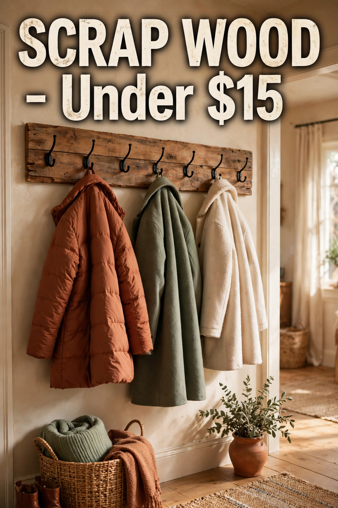

Furniture Flips Beginner DIY Projects
DIY Entryway Coat Hooks from Scrap Wood (Under $15, 1 Hour)

An entryway coat rack is one of the most useful winter projects, and this one takes 1 hour and costs under $15. You take a scrap board, sand it, paint it, and screw on four hooks. Then you hang it by the door, and coats, scarves, and bags finally have a home. No more pile on the chair, no more coats on the floor, and no more searching for a scarf in the morning.
This is a good project for a first wood project, for a small hallway, and for a rented home, because you only need two screws in the wall. A similar coat rack in a shop often costs $35 to $60, so you save a lot, and yours fits your wall exactly. Scrap wood works best, because it already has character, and you can paint it to match your hallway in any colour you like.
How a coat hook board works
A coat hook board is a flat board, usually 24 to 36 inches long and 5 to 6 inches tall, with hooks screwed into it in a row. The board spreads the weight across the wall, so it can hold heavy winter coats without pulling out. The hooks are spaced about 6 to 8 inches apart, so coats do not crowd each other. The board is fixed to the wall with two screws, driven into wall studs or into wall anchors, so it stays put even when it is full.
Use a board at least 3/4 inch thick, so the hook screws have enough wood to grip. A reclaimed pallet board, an old shelf, or a piece of pine from a hardware store all work well. Sand the board smooth, because rough wood snags coats and scarves. Paint it or stain it before you add the hooks, so the finish is even and the hooks stay clean.
What you need
- Scrap wood board, 24 to 36 inches long, 5 to 6 inches tall, 3/4 inch thick — free, or about $5 for a pine board
- Four coat hooks, metal, single or double — about $2 each, $8 total
- Sandpaper, 120 grit and 220 grit — about $2
- Paint or wood stain, a small tin — about $5, or use leftover paint
- Wood screws, 1 inch, for the hooks — usually included with the hooks
- Wall screws and wall anchors, 2 inches — about $2
- A drill, a level, a tape measure, and a pencil — you probably have these
Choose hooks that match your hallway: black metal for a modern look, brass for a warm look, or white ceramic for a farmhouse look. Double hooks hold a coat and a bag at the same time, so they are the most useful. Check the weight rating on the hooks, and choose hooks rated for at least 10 pounds each, so they hold a heavy winter coat.
Steps
- Cut and sand the board. Cut the board to the length you need, 24 inches for three hooks, 36 inches for four or five. Sand the board with 120 grit sandpaper, then with 220 grit, until it feels smooth. Wipe off the dust with a damp cloth, and let the board dry.
- Paint or stain. Paint the board with two thin coats of paint, letting each coat dry for 30 minutes, or stain it with one coat of wood stain and let it dry overnight. Paint the back and the edges too, so the board looks finished from every angle. Let it dry fully before you add the hooks.
- Mark the hook positions. Lay the board face up, and mark the hook positions with a pencil. Space the hooks 6 to 8 inches apart, and leave at least 3 inches from each end. For a 36 inch board with four hooks, mark at 6, 14, 22, and 30 inches from the left end. Check the spacing with a tape measure, so the hooks look even.
- Screw on the hooks. Hold each hook in place and mark the screw holes, then drill small pilot holes, so the wood does not split. Screw each hook to the board with the screws that came with it, and tighten them until they are snug. Do not overtighten, or the screw can strip the wood.
- Find the studs. Hold the board against the wall at about 65 inches from the floor, which is a comfortable height for coats. Use a level to make it straight, and mark the wall through the two mounting holes. Find the wall studs with a stud finder, or use wall anchors if there is no stud where you need it.
- Hang the board. Drill pilot holes in the wall, put in the wall anchors if you need them, and screw the board to the wall with 2 inch screws. Check with the level again, and tighten the screws until the board is firm against the wall. Give it a gentle tug to make sure it is secure.
- Hang your coats. Hang coats, scarves, hats, and bags on the hooks, and enjoy a tidy hallway. Keep a small basket underneath for gloves and shoes, so everything for winter is in one place.
Why a coat hook board pulls loose
A board pulls loose usually because it was screwed into drywall without a stud or an anchor, or because the screws were too short. Always screw into a wall stud if you can, or use wall anchors rated for at least 25 pounds. Use 2 inch screws for the wall, not 1 inch screws, so they go deep enough. If the board still feels loose, add a third screw in the middle, or move the board to a stud. A board that is fixed properly can hold four heavy winter coats without moving.
Cost breakdown
Scrap wood free to $5, hooks $8, sandpaper $2, paint $5, wall screws and anchors $2. Total about $17 to $22 if you buy everything new, and under $15 if you use scrap wood and leftover paint. A similar coat rack in a shop costs $35 to $60, so you save at least $20, and yours is made to fit your wall.
Tips to save time and money
Use a pallet board or an old shelf, because the wood is free and already has character. Buy hooks in a pack of four, because they cost less per hook than buying them one at a time. Paint the board with leftover wall paint, so you do not need to buy a new tin. Add a small shelf on top of the board, by screwing a second board at a right angle, for hats and gloves. Label each hook with a name tag, so every person in the house knows which hook is theirs.
Common mistakes to avoid
Do not hang the board too high, because children and shorter people will not be able to reach it. Do not space the hooks too close together, because coats will crowd each other and fall off. Do not skip the pilot holes, because the wood can split when you screw in the hooks. Do not use hooks rated for light use, because a heavy winter coat will bend them. Do not hang the board on drywall without a stud or an anchor, because it will pull out of the wall.
Variations to try
Try a rustic version: use a reclaimed barn board, black metal hooks, and a dark stain, for a farmhouse hallway. Try a kids version: hang the board at 48 inches from the floor, with colourful hooks, so children can hang their own coats. Try a key hook version: add small hooks underneath for keys and dog leads, so everything is in one place. Try a bench version: put a small bench or a shoe rack underneath the board, so you can sit down to put on your shoes. Try a chalkboard version: paint the board with chalkboard paint, so you can write reminders on it.
Frequently asked questions
How high should I hang coat hooks? About 65 inches from the floor is comfortable for most adults. For children, hang a second board at 48 inches, so they can reach their own coats.
Can I hang this in a rented home? Yes, you only need two screws in the wall, and you can fill the holes with filler when you move out. Use wall anchors, so the board is secure, and keep the board light by using pine instead of a heavy hardwood.
What wood should I use? Pine is the easiest wood for a beginner, because it is soft, cheap, and easy to sand and paint. Reclaimed wood looks better, but it can be hard and full of nails, so check it carefully before you use it.
How much weight can it hold? A board fixed into two studs with 2 inch screws can hold 50 pounds or more. Each hook should be rated for at least 10 pounds, so a heavy winter coat is no problem.
Pin this: DIY Entryway Coat Hooks from Scrap Wood Under $15 1 Hour